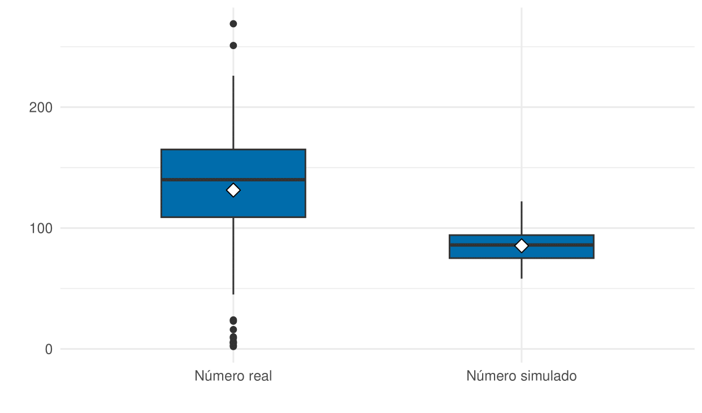

Processos de Poisson não homogêneos de n tipos
Uma possível aplicação no poder Judiciário
Introdução
Modelagem de dados e previsão de eventos futuros tem sido o garantidor do mercado de trabalho em estatística estar aquecido. Este tipo de inteligência aplicada à negócios vem se tornando essencial em qualquer setor, inclusive no poder Judiciário. Apesar deste não depender de faturamento para sua existência por ser inalienável ao setor público, tem sido do interesse dos próprios tribunais saber indicadores e estatísticas relacionadas ao próprio tribunal. E a modelagem surge neste contexto para agregar valor às decisões estratégicas deste poder.
Buscou-se trabalhos de temas semelhantes, que visam modelar a quantidade de decisões em processos em tribunais. Entretanto, não consegui localizar nenhum; motivo esse talvez por ser tema sensível, no sentido de poder levar indiretamente a comparação de rendimentos entre juízes em um tribunal, seja pela possível falta de pertinência do assunto, seja pela tentativa inédita de modelar algo do tipo.
Entretando, buscou-se trabalhos que modelam outros tipos de contagem usando de processo de Poisson não homogêneo, como (DINCER;DEMIR;YALÇIN,2022).
Na metodologia, com base no livro ROSS (2010), apresento toda a metodologia e suporte teórico adotado na seção de análises. Na seção aplicação computacional iremos trazer uma possível solução simulada do problema proposto, e na seção de resultados apresento as conclusões gerais.
Metodologia
Irei trazer em tópicos as tecnologias utilizadas diretamente no trabalho. Para mais informações, consulte ROSS (2010) cap. 5.3.
Dia útil
Por mais hiperbólico que pareça, não foi possível localizar uma definição fechada de dia útil. Portanto, consideraremos como dia útil, todos os dias do ano excetuado os feriados, finais de semana (sábado e domingo) e recessos coletivos. Pegando como base o ano de 2023, iríamos considerar como dia útil para o tribunal selecionado para a aplicação computacional todos os dias com excessão de:
- Todos os sábados e todos os domingos do ano;
- Dias 01/01/2023 a 06/01/2023 - Recesso Forense;
- Dias 20/02/2023 a 22/02/2023 - Carnaval & quarta-feira de cinzas;
- Dias 5/04/2023 a 7/04/2023 - Quarta e quinta-feira Santa e Paixão de Cristo;
- Dia 21/04/2023 - Tiradentes;
- Dia 1/05/2023 - Dia do trabalhador;
- Dia 08/06/2023 - Corpus Christi;
- Dia 11/08/2023 - Dia do Advogado;
- Dia 7/09/2023 - Independência;
- Dia 12/10/2023 - Dia de Nossa Senhora Aparecida;
- Dias 01/11/2023 e 02/11/2023 - Dia de Todos os Santos e Finados;
- Dia 15/11/2023 - Proclamação da República;
- Dia 08/12/2023 - Dia da Justiça;
- Dias 20/12/2023 a 31/12/2023 - Recesso Forense.
Note que feriados que se sobrepõe ou que são aos finais de semana, só foram anotados uma vez, para evitar confusão. Note ainda que é trivial inserir as férias individuais de juízes e ministros desta forma.
Portanto, se fixado o ano, pode-se pensar no intervalo \((0,t]\) como sendo o primeiro instante do primeiro dia do ano até o último instante do último dia do ano, podemos ordenar os dias por índice, tal que o primeiro dia do ano (1º de janeiro) representa o dia 1, o dia 1º de Fevereiro representa o dia 32, até o dia 31 de dezembro, representando o dia 365. O restante dos dias são dias úteis.
Com isso, teremos 134 dias que não são dias úteis no ano de 2023, sendo estes os dias de índice: 1, 2, 3, 4, 5, 6, 7, 8, 14, 15, 21, 22, 28, 29, 35, 36, 42, 43, 49, 50, 51, 52, 53, 56, 57, 63, 64, 70, 71, 77, 78, 84, 85, 91, 92, 95, 96, 97, 98, 99, 105, 106, 111, 112, 113, 119, 120, 121, 126, 127, 133, 134, 140, 141, 147, 148, 154, 155, 159, 161, 162, 168, 169, 175, 176, 182, 183, 189, 190, 196, 197, 203, 204, 210, 211, 217, 218, 223, 224, 225, 231, 232, 238, 239, 245, 246, 250, 252, 253, 259, 260, 266, 267, 273, 274, 280, 281, 285, 287, 288, 294, 295, 301, 302, 305, 306, 308, 309, 315, 316, 319, 322, 323, 329, 330, 336, 337, 342, 343, 344, 350, 351, 354, 355, 356, 357, 358, 359, 360, 361, 362, 363, 364 e 365. Iremos chamar o vetor que contém estes valores acima de \(\textbf{v}_{dnu}\), sendo seu complementar \(\textbf{v}_{du}\) o vetor que contém todos os dias de 1 a 365 não contidos no vetor acima, representando assim os dias úteis (\(du\)).
Processo de contagem
Um processo de contagem, definido por DINCER;DEMIR;YALÇIN (2022 apud BAS,2019) , é um processo estocástico, em que \(M(t),t \geq 0\) é não negativo, com suporte em \(\mathbb{Z}\) não decrescente \(\forall t \geq 0\). \(M(t)\) é o número total de eventos que ocorrem até o tempo \(t\), e \(M(t,t+h)=M(t+h)-M(t)\) denota o número de eventos ocorridos no intervalo \((t,t+h],h>0\). Além disso, um processo de contagem, em que o número de eventos ocorridos em intervalos de tempo disjuntos são independentes e tem incrementos independentes. Um processo de contagem tem incrementos estacionários se a distribuição de \(M(t,t+h)\) depende apenas do comprimento do intervalo de tempo.
Variável aleatória Poisson
Se \(M(t)\) denota o número de eventos que ocorrem num intervalo de tempo específico, este é chamado variável aleatória Poisson. A variável aleatória Poisson possui função de massa de probabilidade:
\[\begin{equation} \mathbb{P}(M(t)=k)=\frac{e^{-\lambda_t}\lambda_t^k}{k!} \end{equation}\]
onde \(\lambda_t\) é o parâmetro da distribuição Poisson e representa a taxa de eventos que ocorrem no intervalo de tempo especificado, além de ser a variância e esperança de \(M(t)\) ser igual a \(\lambda_t\).
Processo de Poisson
Um processo de Poisson é definido por ROSS(2010) como:
\[\begin{equation} \label{eq1} N(t) \stackrel{}{\sim} Poisson(m_(t)), i=1,2,...,n. \end{equation}\]
E:
\[\begin{equation} \mathbb{P}\{N(t) = x\} = \frac{[m(t)]^{x}}{x!}e^{-m(t)} \end{equation}\]
Onde \(\frac{o(h)}{h} \rightarrow 0, h \rightarrow 0\)
Processo de Poisson homogêneo
Se o processo de Poisson \(M(t)\) têm função de intensidade constante \(\lambda_t=\lambda \ \forall \ (t,t+s]\), então este é chamado um processo de Poisson homogêneo. (DINCER;DEMIR;YALÇIN,2022)
Processo de Poisson não homogêneo
Se o processo de Poisson \(M(t)\) tem função de intensidade variando com o tempo, este é um Processo de Poisson não homogêneo. A função massa de probabilidade deste processo é definida como:
\[\begin{equation} \mathbb{P}(M(t,t+h)=x)=\frac{\left( \int_t^{t+h}\lambda(z)dz \right)^x}{x!}e^{-\int_t^{t+h}\lambda(z)dz} \end{equation}\]
Análises
Vamos supor que o número total de processos julgados em um período \(t\) de tempo pelo \(i\)-ésimo juiz ou ministro de um determinado tribunal \(N_{i}(t)\) seja um processo de Poisson, definido por ROSS.
Em que \(n\) seria o total de juízes e/ou ministros deste tribunal. Note que \(n\) é determinístico, ou seja, escolhido um tribunal, este terá um número fixo de juízes e ou ministros. Portanto, \(n\) não será tratado como variável aleatória neste estudo.
Com base nessas propriedades, temos que a probabilidade de o número de processos julgados pelo i-ésimo juiz ou ministro no tempo \((0,t]\) ser exatamente x é dada por:
\[\begin{equation} \mathbb{P}\{N_{i}(t) = x\} = \frac{[m_{i}(t)]^{x}}{x!}e^{-m_{i}(t)} \end{equation}\]
Podemos inferir empiricamente que a taxa \(m_i(t)\) não é constante em relação ao tempo \(t\), sendo portanto uma função de \(t\), do tipo: \[\begin{equation} m_i(t) = E[N_{i}(t)]=\int_{0}^{t}\lambda_{i}(s)ds \end{equation}\] com função de intensidade \(\lambda_{i}(t)\) e \(s\) o intervalo \((t,t+s)\). Portanto, teremos: \[\begin{equation} \mathbb{P}\{N_{i}(t) = x\} = \frac{1}{x!} \left( \int_{0}^{t}\lambda_i(x)dx \right) ^{n}exp \left( -\int_{0}^{t}\lambda_{i}(x)dx \right) \end{equation}\] Se considerarmos, por exemplo, que o número de processos que um juiz ou ministro julga em dias úteis terá intensidade diferente do número de processos que este juiz ou ministro julga em dias não úteis. Também sabemos empiricamente que o número de processos julgados em dias não úteis não é necessariamente sempre igual à zero, o que motiva a pensar que existem ao menos 2 intensidades possíveis, do tipo:
\[\begin{equation} \label{eq2} \lambda_i(t) = \begin{cases} \Lambda_{i(1)}\text{, Dia útil;} \\ \Lambda_{i(2)}\text{, c.c.} \end{cases} \end{equation}\]
Constituindo portanto um processo de Poisson não homogêneo.
Da primeira equação, podemos inferir que o número total de processos julgados em um determinado tribunal é um processo de Poisson \(N(t)\) composto, definido por:
\[\begin{equation} \label{eq0} N(t) = \sum_{i=1}^{n} N_i(t) \stackrel{}{\sim} Poisson \left( m(t) \right) \end{equation}\] \[\begin{equation} \text{Em que} \ m(t) = \sum_{i=1}^{n}m_{i}(t) \end{equation}\] Constituindo portanto um processo de Poisson não homogêneo de n tempos.
Neste estudo, iremos estudar o tempo em dias. Ou seja, \(t=1\) seria o tempo decorrido de meia noite (00:00:00) do dia 1º de Janeiro, até 23:59:59 do mesmo dia. Ou seja, \(t=1 \rightarrow (0,1]\).
Utilizando o definido na metodologia,, podemos redefinir a equação anterior mais precisamente como:
\[\begin{equation} \label{fi} \lambda_i(t) = \begin{cases} \Lambda_{i(1)}, \ \ \ \ \ t \in \textbf{v}_{du}, \\ \Lambda_{i(2)}, \ \ \ \ \ t \in \textbf{v}_{dnu}, \\ \end{cases} \end{equation}\] Onde \(\Lambda_{i(1)}\) e \(\Lambda_{i(2)}\) são escalares, possíveis de serem estimados com dados do tribunal. É razoável conjecturar que \(\Lambda_{i(2)} \leq \Lambda_{i(1)}\) no nosso exemplo. Com isso, estamos prontos para responder algumas perguntas.
Quantos processos são julgados por um juiz em um mês?
Tomando Janeiro de 2023 (dias 1 a 31) como exemplo, o número de processos julgados pelo i-ésimo juiz será uma variável aleatória Poisson, com média:
\[\begin{equation} \label{eq3} \begin{split} \lambda_i\int_{t=0}^{t=31}\Lambda_i(s)ds \ ; \{s = 30\} \\ = \lambda_i\int_{t=0}^{t=8}\Lambda_{i(2)}ds \\ + \ \lambda_i\int_{t=8}^{t=13}\Lambda_{i(1)}ds\\+ \ \lambda_i\int_{t=13}^{t=15}\Lambda_{i(2)}ds\\+ \ \lambda_i\int_{t=15}^{t=20}\Lambda_{i(1)}ds\\+ \ \lambda_i\int_{t=20}^{t=22}\Lambda_{i(2)}ds\\+ \ \lambda_i\int_{t=22}^{t=27}\Lambda_{i(1)}ds\\+ \ \lambda_i\int_{t=27}^{t=29}\Lambda_{i(2)}ds\\+ \ \lambda_i\int_{t=29}^{t=31}\Lambda_{i(1)}ds\\ \end{split} \end{equation}\]
Note que podemos chamar uma variável \(z\) para substituir \(t\) nos limites de integração, afim de não precisar respeitar a ordenação dos dias e considerar apenas a passagem de tempo, tal que:
\[\begin{equation} \begin{cases} t = i \rightarrow \text{i-ésimo dia} \\ z = i \rightarrow \text{i-dias} \end{cases} \end{equation}\]
Portanto, teremos
\[\begin{equation} \label{eq4} \begin{split} \lambda_i\int_{t=0}^{t=31}\lambda_i(s)ds &= \lambda_i \left( \int_{z=0}^{z=17}\Lambda_{i(1)}ds \right) + \lambda_i \left( \int_{z=17}^{z=31}\Lambda_{i(2)}ds \right)\\ &= \lambda_i \left[ \left( \int_{z=0}^{z=17}\Lambda_{i(1)}ds \right) + \left( \int_{z=17}^{z=31}\Lambda_{i(2)}ds \right) \right] \end{split} \end{equation}\]
Quantos processos são julgados por um juíz em um ano?
Expandindo o raciocínio empregado anteriormente, podemos dizer que a quantidade de processos julgados pelo i-ésimo juiz no ano de 2023, com tempo \(t \in \textbf{v}_{du} \cup \textbf{v}_{dnu}\) será Poisson com média:
\[\begin{equation} \label{eq5} \begin{split} \lambda_i\int_{t=0}^{t=365}\lambda_i(s)ds &= \lambda_i \left[ \left( \int_{z=0}^{z=231}\Lambda_{i(1)}ds \right) + \left( \int_{z=231}^{z=365}\Lambda_{i(2)}ds \right) \right] \end{split} \end{equation}\]
Quantos processos são julgados em um tribunal em um ano?
Finalmente, podemos responder nossa pergunta inicial, aproveitando dos resultados das equações anteriores, temos que a quantidade de processos julgados em um tribunal (N(t=365)) será Poisson com média:
\[\begin{equation} \label{eq6} \begin{split} N(t=365) = \sum_{i=1}^{n} \lambda_i \left[ \left( \int_{z=0}^{z=231}\Lambda_{i(1)}ds \right) + \left( \int_{z=231}^{z=365}\Lambda_{i(2)}ds \right) \right] \end{split} \end{equation}\]
Aplicação computacional
Íntegra dos códigos disponíveis em Github.
Resultados
Aplicando a teoria computacionalmente, utilizou-se dados de um determinado tribunal (STF), via dados públicos obtidos em Corte aberta. Escolhido o tribunal e o ano de 2023, delimitou-se também uma classe processual por entender que a classe também constitui fonte de variação na função de intensidade, o que não seria de interesse deste estudo, além de natureza não estocástica de algumas classes. Com isso, o resultado da pergunta “Quantos processos são julgados em um tribunal em um ano?” se especializa para “Quantos processos de classe HC foram julgados no STF em 2023?”, mudando portanto o parâmetro mas mantendo a ideia e intenção do estudo. Com isso, foi possível obter o seguinte gráfico:

| Estatística | Parâmetro |
|---|---|
| \(E[(m(t)] = 84,56\) | \(m(t) = 131,4\) |
| \(E[N(t)] = 7.936,942\) | \(N(t) = 12.221\) |
Em que observamos que o número estimado pelo processo foi de uma grandeza razoavelmente conservadora em relação ao número real de processos.
Conclusão
Das análises contidas na seção 4, baseadas na metodologia da seção 3, foi possível modelar o problema com suporte matemático, em que usando destas definições poderíamos retirar conclusões e respostas pertinentes a problemas reais.
Com a aplicação computacional executada na seção 5, podemos testar se, delimitado um escopo e com algumas limitações, as propriedades escritas funcionariam empiricamente. Conforme observado, a função de intensidade proposta na aplicação (1 para \(v_{du}\); 0 para \(v_{dnu}\)) não foi eficiente em descrever bem o comportamento do processo. O ideal seria numa aplicação futura estimar de outra maneira esta função de intensidade. Uma possibilidade é que esta função seja específica para cada juiz, visto que pode ocorrer de alguns continuarem produzindo normalmente em férias, enquanto outros optam por descansar. É ainda interessante adicionar as férias individuais de cada um dos no vetor \(v_{dnu}\) individual, para melhorar ainda mais as estimativas. DINCER;DEMIR;YALÇIN(2022, p.1148) propõe ainda alguns modelos pré calibrados para a função de intensidade, que poderiam ser testados também.
Podemos ver na aplicação, entretanto, que o tempo e o juiz foram fatores que influenciavam na contagem, corroborando com o postulado de que este seria um processo de Poisson não homogêneo de n tipos. Vimos ainda que sob a hipótese nula de das duas últimas equações, o teste de Kolmogorov-Smirnov não rejeitou a distribuição hipotetizada para alguns dos testes.
Voltando a pergunta primeiramente formulada, “Quantos processos são julgados em um tribunal em um ano?”. De ROSS (p. 342), temos que: \[\begin{equation} E[N(t)] = \lambda \int_0^t\frac{\lambda(y)}{\lambda}dy = \int_0^t\lambda(y)dy \end{equation}\] Que, no nosso exemplo empírico, resultou em 7.936,942 para uma determinada semente; onde dados analíticos mostram que o verdadeiro valor era de 12.221. Calibrada a função de intensidade (pelo que o resultado numérico mostra, a estimativa está conservadora), pode-se por este método chegar mais próximo ao verdadeiro parâmetro.
Portanto, conclui-se que este pode ser um instrumento útil para modelagem probabilística de questões de contagem em tribunais.
Referências
- Ross, S. M. (2010). Introduction to Probability Models. Academic Press.
- Dincer, E., Demir, S. M., & Yalçın, B. A. (2022). [Título do artigo]. [Nome da Revista/Congresso].